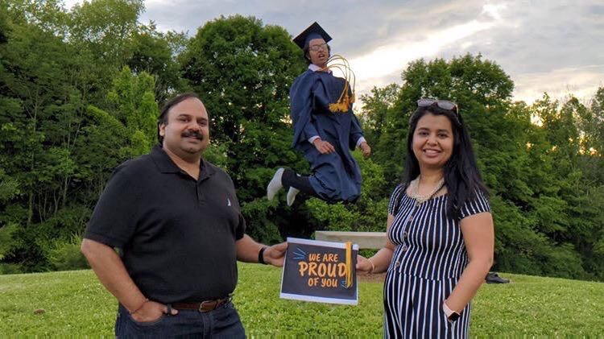

A collection of my favorite moments :)
In no particular order.
you giving me a carrot in physics and me trying to eat it quietly,
which of course didn't work. istg, carrots crack so loudly
cookie runs during EDD! and the cute little kids, omg
us dying laughing at me sniffing in the car after badminton
waiting for each other during passing periods so we could walk
to class together. that's such a small thing but it was so cute
now that I think about it
watching girlsplaining at knoch knolls with a lotttt of food
sitting together after prom pics with a warm campfire, comfy clothes,
and my head on your shoulder
me and raunak pouring water in your hoodie LMAO
me trying to kiss your cheek during movie night, but really just pushing
my lips against your face and you clowning me for it
our physics library date, where I was ~distracted~
just. every time you missed a spike in volleyball.
THIS PICTURE I DIE EVERY TIME LMFAO

when we were ~doing stuff~ and elaine was there
you walking me to badminton practice, saying bye, and coach benson IMMEDIATELY
interrogating me about you
~vibing~ in math
when we were holding hands in the library and we thought wildcat weekly got it
on camera, so we thought we'd get exposed to the whole physics class
conversely, me jumping you in the car after we watched homecoming king
our shoe stepping game that definitely hurt both of our feet
you and nicole ashta racing down the math hallway in a one-legged race
me, you, and raunak leaving the thanksgiving party to play basketball
our super deep conversation at springbrook about life and how we perceive ourselves
you telling me to listen to fasting and furious at regionals
monologue show! staring at the stars! existential conversation!
going to the barnes and noble in downtown naperville and you looking for something
in the religious section. you looked like a brown uncle, it was priceless
the sheer number of times we both fell or got hit during mud soccer, good lord
you wearing my bra. just. that's the peak of comedy. i don't think anything will
ever top it.
sectional runthrough. performing, you calming me down, us highkey exposing that we're
dating, me malfunctioning when you kissed my cheek.
our bike date! you were sad i didn't come close to you BUT i got an awesome polaroid of
you, sooooooo
the waiter at bdubs asking if we wanted one check and both of us getting clowned into oblivion
playing guess the song in the car. and physics. and on facetime. personally, i liked the car the
most, because if i pretended to hesitate you'd kiss me :)
getting lost at knoch knolls. TWICE.
you saying something ~fun~ to me and sarah overhearing and SPRINTING AWAY SCREAMING
you sneaking into my home. i cannot express how stressful that was but how little i regret it.
neuqua sunrise! i was so sleepy, but i discovered that morning kisses hit different.
me having a nervous breakdown in the YMCA parking lot about how google maps was a BITCH to me, and
you kissing me to calm me down uwu